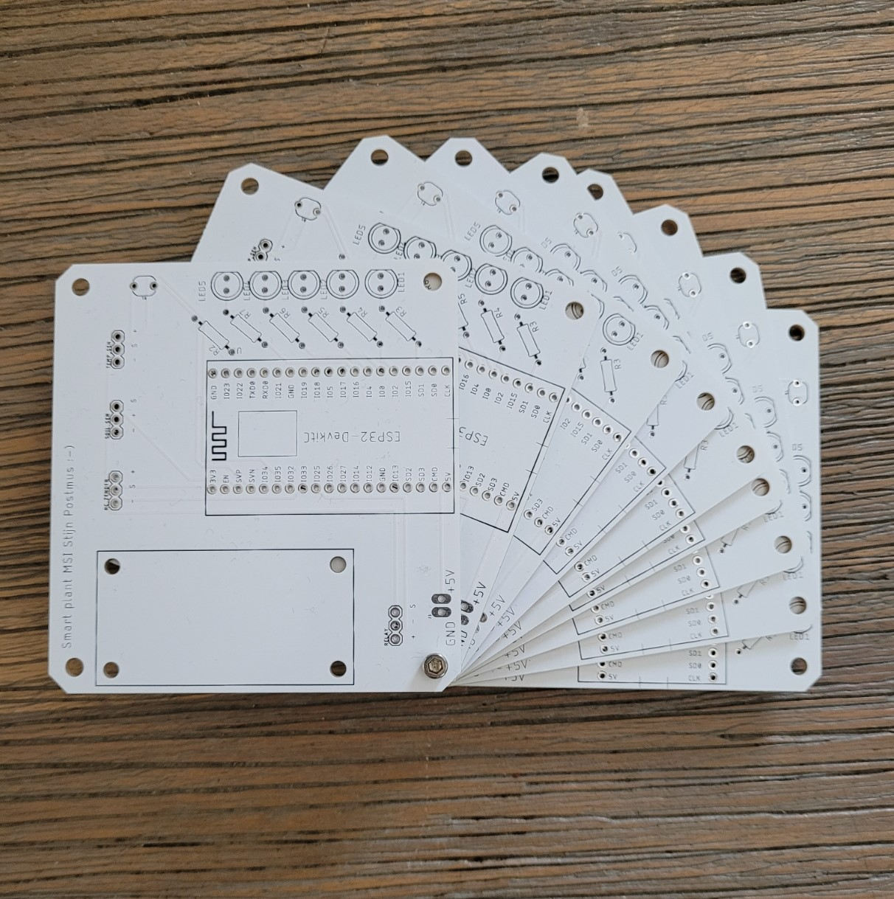
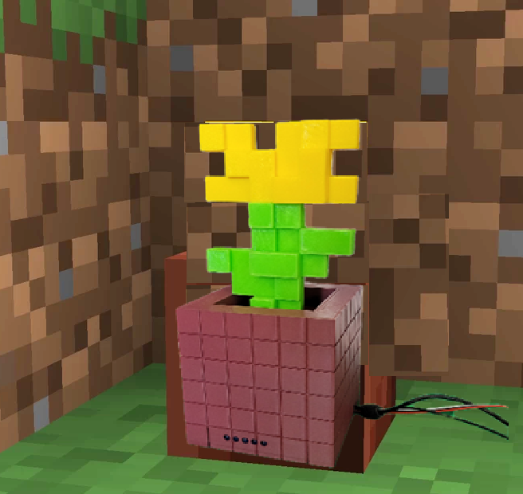
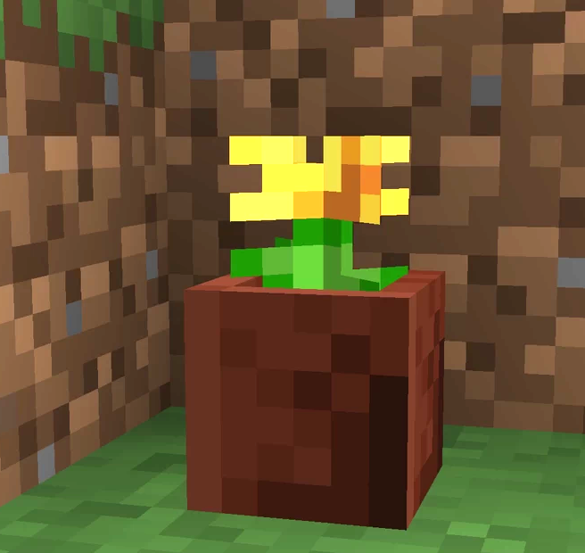
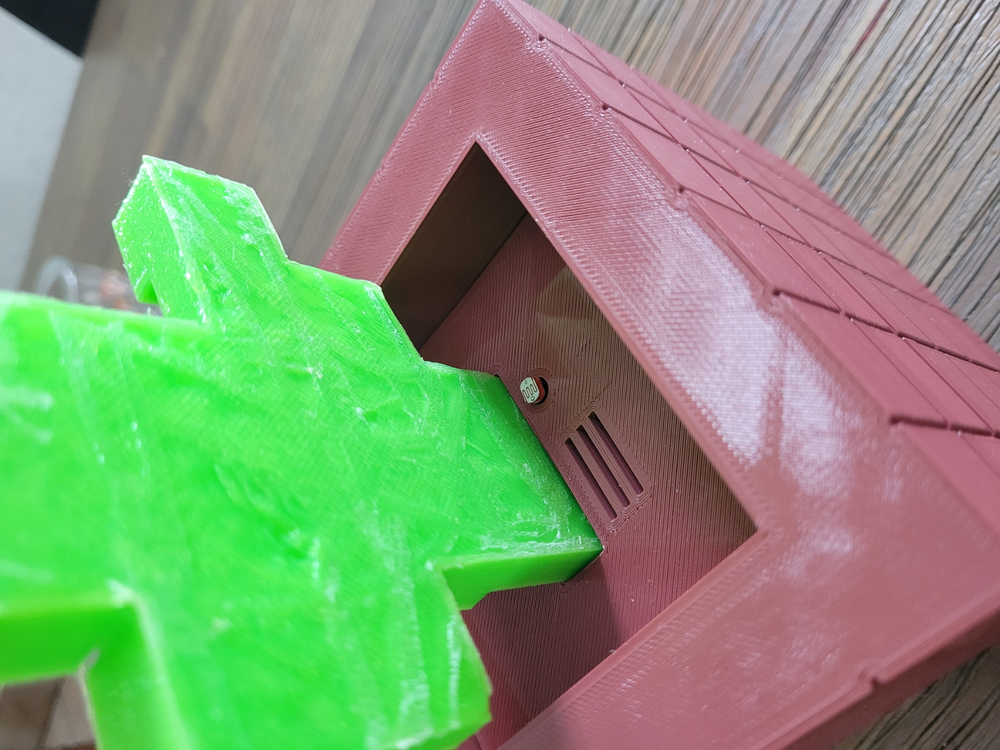
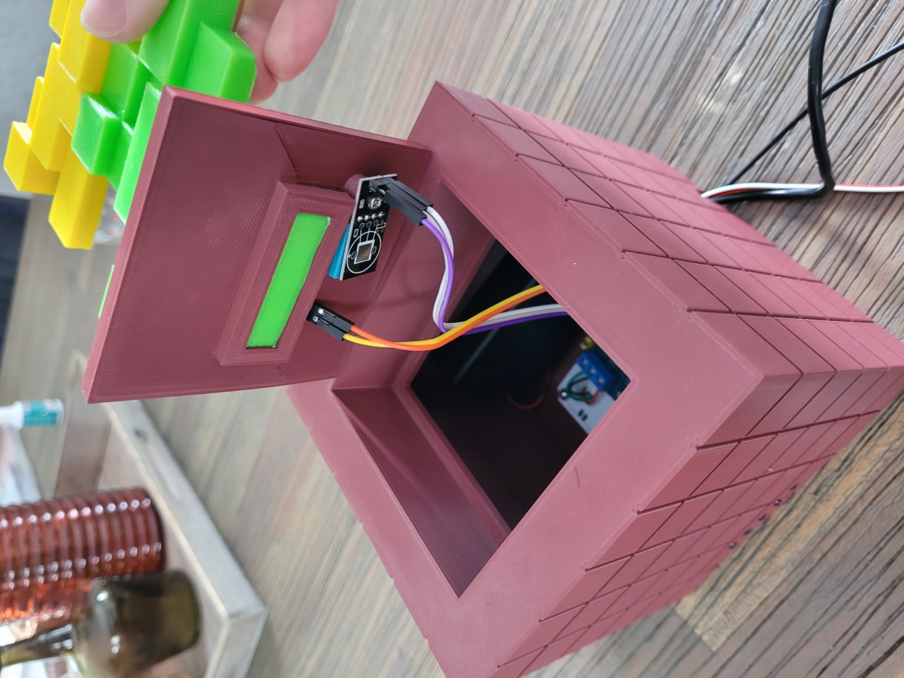
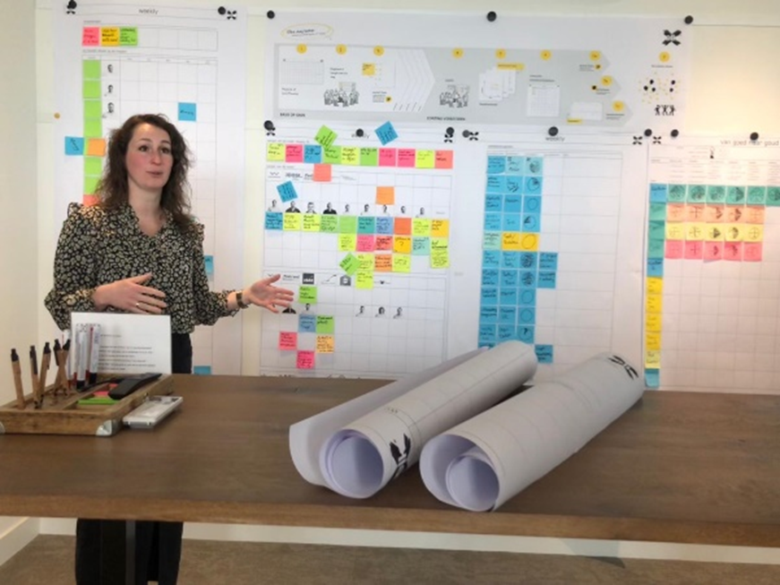
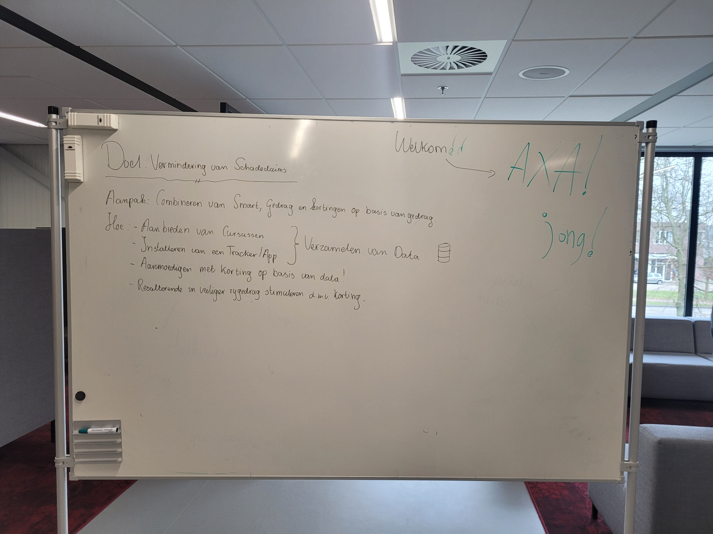
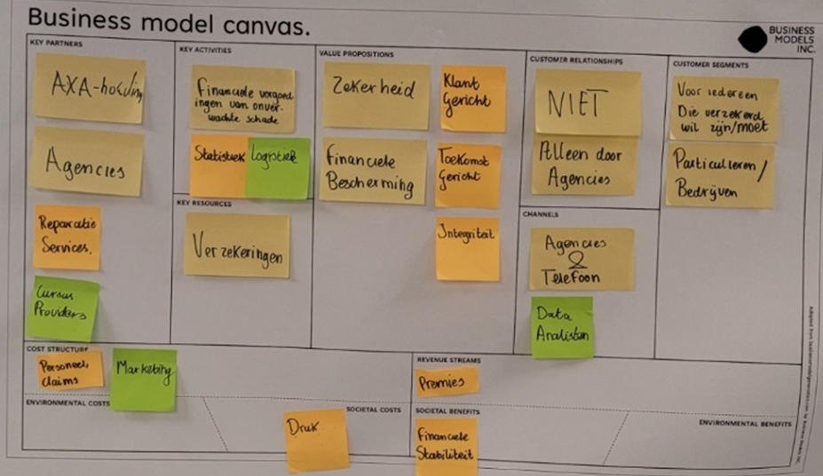
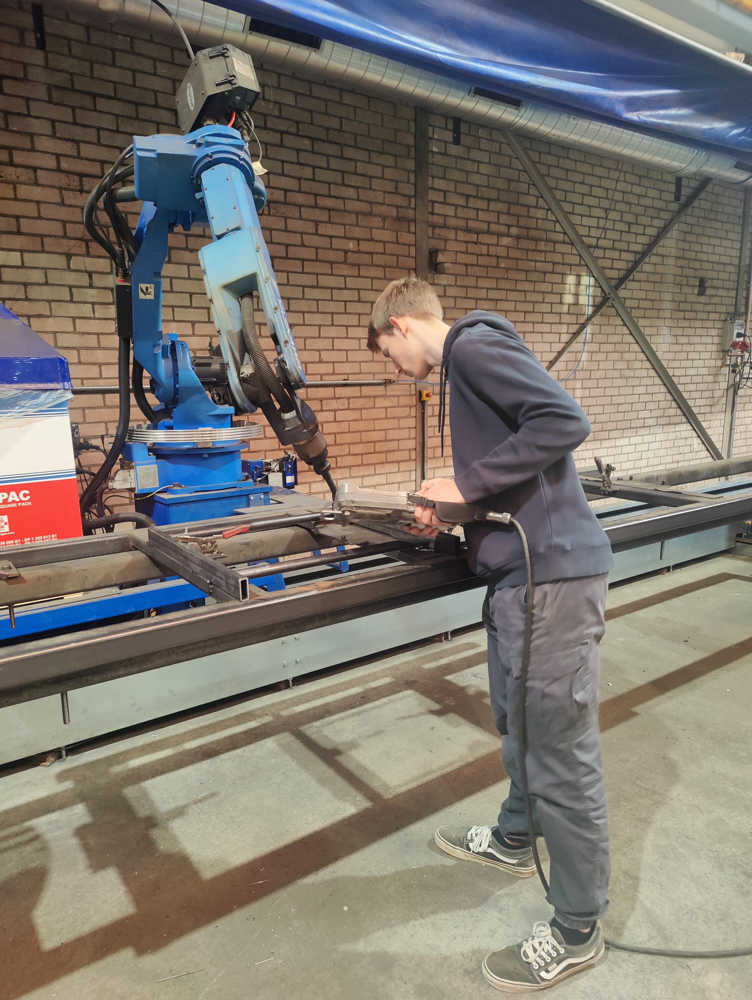

Smart Connection
API's maken:
Tijdens de Smart Connection workshops was een van de doelen een website te creëren. Het resultaat bekijk je nu! De website is met html en met css-styling gemaakt. Ik had al een beetje ervaring met html maar mijn html-kennis is nu zeker verbeterd. Zo heb ik gewerkt met slideshows, userinput, hyperlinkjes en video’s.
Naast de website hebben we API’s gemaakt, zoals de weer-API hier rechts. Een API is te omschrijven als een brug tussen een gebruiker en een dataserver. De gebruiker wilt bepaalde informatie ontvangen. De API vraagt dan de juiste data op en geeft deze overzichtelijk weer voor de gebruiker. De weer API heb ik aangepast met een zoekfunctie, zodat je niet alleen het weer ziet in Nijmegen, maar bijvoorbeeld ook in Arnhem of Berlijn. De tweede API staat onder mijn persoonlijke pagina. Dat is de NASA foto van de dag.
Workshops AI
Tijdens de workshops AI werd veel uitgelegd over AI. Ik had al wat basiskennis, maar ik heb veel nieuwe dingen geleerd tijdens deze workshops. Er is veel verteld over de geschiedenis van AI, maar ook over de verschillende soorten AI. De workshops AI zijn vol enthousiasme gegeven. Hierdoor was het niet moeilijk om de aandacht erbij te houden, ook al was de theorie soms best ingewikkeld. We zijn ook praktisch met AI bezig geweest. Er is een online AI model gebouwd dat in foto’s onderscheid kon maken tussen bijen en vlinders.
Wat ik door de workshops heb geleerd:
- gebruik van API’s
- Maken van HTML-websites
- Verschillende AI types
Smart Technology
Robot workshop Delft
Een extra workshop waar we ons voor konden aanmelden, was de robot workshop in Delft. Hier zijn we met vijf studenten een dagje in het robotlab geweest. In het robotlab staan verschillende robots. In groepjes van 2-3 personen zijn we bezig geweest met het programmeren op twee Universal robots. Met een tablet konden we de robot laten bewegen en konden programma’s gemaakt worden. Na een paar uur is het gelukt een blokje op te pakken en te verplaatsen, en ook om twee blokjes te stapelen.
Ik vond deze workshop erg boeiend, en ook leuk om met een robot te werken. Het is best indrukwekkend om een grote robot te laten bewegen en deze te programmeren. Van de workshop heb ik geleerd hoe een Universal robot geprogrammeerd en gebruikt kan worden.
In de workshops Smart Technology zijn we bezig geweest met het maken van een systeem om planten automatisch water te geven. Hiervoor hebben we verschillende workshops gevolgd, zoals een workshop cpp programmeren en workshops 3D-printen.
Programmeren
De eerste workshops zijn we met microcontrollers en sensoren bezig. Met online tutorials werd stap voor stap uitgelegd hoe de software geschreven moet worden. Ik heb vanuit mijn opleiding al ervaring met programmeren van microcontrollers, dus gingen deze workshops soepel. Waar nodig kon ik mensen helpen met problemen. Met verschillende sensoren en een microcontroller wordt onder andere de temperatuur, de grondvochtigheid en het lichtniveau gemeten. Met deze data kan een motor aangezet worden om water naar de plant pompen en kan een lamp aangezet worden. Alle data wordt op een server gezet en daarnaast is er een app gekoppeld om de plant te monitoren en bedienen. Dit is te zien in de videodemonstratie.
PCB ontwerpen

Na de software is een PCB ontwerpen. De mocrocontroller en alle sensoren worden hier uiteindelijk op gesoldeerd. Het ontwerpen van de PCB vond ik de leukste stap. Ik heb al een tijdje willen leren hoe je PCB’s maakt en dat heb ik nu geleerd. Met behulp van het computerprogramma ‘Eagle’ is de PCB ontworpen. De PCB is online besteld en na een aantal weken zijn de PCB’s ontvangen. Er zijn aardig veel reserve. Alle onderdelen zijn op de PCB gesoldeerd, dit ging goed, want ik heb al ervaring met solderen.




3D printen
De laatste Smart Tech workshops gingen over het ontwerpen en printen van een bakje doormiddel van computer aided design (CAD). Zelf heb ik thuis een 3D-printer staan, deze gebruik ik regelmatig om puzzels of handigheden te printen. Omdat ik dus al wat ervaring heb en mezelf toch een beetje wilde uitdagen, heb ik een bakje ontworpen met verschillende onderdelen. Deze is gebaseerd op een item uit de game ‘Minecraft’. Het is een plantenpot met daarin een paardenbloem. De PCB is aan de onderkant met een klepje in de pot verwerkt. Zo kan de PCB makkelijk verwijderd worden. Het bakje bestaat uit vijf verschillende 3D geprinte onderdelen. De sensoren zitten achter de bloem verstopt. Met vijf knipperende ledjes wordt aangegeven wat de grondvochtigheid is.
Wat ik door de workshops heb geleerd:
- een slim systeem maken dat met internet verbindt
- ontwerpen van een PCB
- 3D printtechnieken
Smart Business
Bedrijfsbezoek Elk®

Tijdens een van de workshops hebben we een dag een bezoek gebracht aan elk®. Dit bedrijf renoveert en vernieuwd huizen. Dat doen ze met zelfontwikkelde bouwoplossingen. Dit zijn innovatieve systemen om het installeren van badkamers, keukens en meterkasten makkelijker, sneller en circulair te maken.
Deze dag hebben we een rondleiding gekregen door de vestiging in Nijmegen. Daarna zijn we in 3 groepen van 4-5 studenten bezig geweest met een oplossing te bedenken voor elk®. Mijn groep en ik zijn bezig geweest met de vraag:
“maak een plan voor elk® om d.m.v. smart industry een snelle analyse te maken waarmee geschikte wijken kan vinden om te verdichten.”
Situatie: Elk® wilt nieuwe locaties om te verduurzamen vinden. Nu moet Elk alle data handmatig opvragen met mails/ data opzoeken online. Dit kost veel tijd.
Taak: Ik had als taak uit te zoeken waar je online data kon opvragen en kon zien. Zodat we een online dashboard konden maken.
Actie: Na verschillende websites bekeken te hebben had ik een website gevonden met veel voor elk interessante data. Deze website gebruikte verschillende API’s om van meerdere websites data op te vragen. Dit heb ik met de groep gedeeld.
Resultaat: de groep heeft het resultaat gepresenteerd en met een stukje van de website konden we aan Elk laten zien dat ons concept mogelijk is. Uiteindelijk gaf elk aan onze ideeën te waarderen en mee te nemen in de toekomst.
Reflectie: Ik ben tevreden met het eindresultaat wat we aan elk geleverd hebben. Wel denk ik dat ik het idee iets eerder met de groep kon delen. Ik was eerst een tijd bezig met onderzoeken wat allemaal mogelijk was op de website.
Wat ik hier heb geleerd is:
- lean: manier van denken gericht op het geven van maximale waarde voor de klant met minimale verspilling. Hier had ik nog niet eerder van gehoord en het was boeiend om dit in een bedrijf toegepast zien worden.
- echte situatie om in korte tijd een oplossing te bedenken door met groep ideeën te sparren en uit te werken.
De workshops van Smart Business waren erg afwisselend. Zo zijn we tijdens de workshops vaak uitgedaagd om verschillende modellen te maken, zoals het TOM-model of het business model canvas. Ook zijn er veel verschillende sprekers geweest die over verschillende casussen in hun werkveld besproken, of ons opdrachten gaven. Deze afwisseling van de workshops heb ik als positief ervaren. Eigenlijk was iedere workshop wel anders, en die variatie spreekt mij wel aan.
Business Model Canvas
Deze week kwam een gastspreker langs om te praten over het bedrijf waar hij werkt: AXA. Dit is een bedrijf dat autoverzekeringen levert. Na een uitleg over het bedrijf en over business model canvas, gingen we zelf aan de slag. Hiervoor hebben we een business model canvas (BMC) gemaakt. Ik had nog nooit van een BMC gehoord, dus ik wist niet goed wat ik moest verwachten. Een BMC bestaat uit negen verschillende vakken. In de vakken komt uitleg over onderdelen van het bedrijf, zodat je precies ziet hoe een bedrijf in elkaar zit. Eerst vond ik het best ingewikkeld om een canvas in te vullen. met een beetje hulp van mijn groepsgenoten en wat oefening ben ik hier aan het einde van de workshop beter in geworden.


Daarna ging AXA de volgende stap in; het gebruiken van een tracker-app om klanten te stimuleren netter te rijden. Met deze nieuwe informatie moesten we het BMC aanpassen op de nieuwe situatie. Met slle groene blaadjes is het BMC aangepast.
Managementgame
In deze workshop gingen we ons inleven in een bestaand bedrijf. Iedereen kreeg een eigen rol toegewezen in duo’s. Samen met Marc ben ik hoofd financiën geworden. Er was ook een duo marketing, directeur, etc. Na een korte uitleg over het bedrijf en een beknopte roluitleg gingen we aan de slag, door met elkaar te vergaderen.
In het bedrijf speelde meerdere problemen zich af. Zo was de directeur geïnteresseerd in een nieuwe product, terwijl de financiën het huidige product in twijfel trok. Ieder kwartier gingen twee bedrijfsonderdelen met elkaar in gesprek. Dit waren gesprekken van tien minuutjes waarin we echt aan een aparte tafel een officieel gesprek met elkaar voerden.
Ik vond leerzaam om in een andere rol te komen dan wat ik normaal doe. Je staat hier normaal nooit dus je moet proberen anders te denken. In een spelvorm is het ontspannen, want je mag fouten maken. Door in dit spel deze bedrijfstak te spelen, heb ik nieuw inzicht in hoe je je kan verdiepen in andere taken. Verder helpt met inzicht in wat andere doen en hoe verschillende bedrijfstakken samenhangen.
Wat ik door de workshops heb geleerd:
- Maken van verschilende modellen zoals: BMC en TOM-model
- Geïnspireerd door vele gastsprekers
- Algemene Bedrijfskunde kennis
Smart Me

Competities
Je toont veel initiatief en betrokkenheid
Als ik iets niet weet, ga ik snel op onderzoek uit. Dan zoek ik het antwoord online op, of bespreek ik dat met anderen. Als ik tijdens een gesprek iets niet begrijp bespreek ik dat.
Voor de minor heb ik talloze taken geïnitieerd, zoals het beginnen verzamelen van informatie voor de website, starten met ontwerpen van het bakje voor de plant. Tijdens het project ook. Zo ben ik begonnen met onderzoek doen naar de lasrobot, werken aan de website. Als ik met een taak bezig ben, wil ik deze zo goed mogelijk uitvoeren. Soms ben ik daardoor iets langzamer.
Ik heb veel ideeën gedeeld tijdens de minor. Tijdens de workshops heb ik zelf bedacht dat ik mijn plantenbak op een bloem wilde laten lijken. Ook heb ik zelf het ontwerp van de PCB gemaakt. Verder heb ik tijdens het project oplossingen aangedragen. Tijdens het onderzoek dat ik heb uitgevoerd, heb ik ontdekt dat offline computerprogrammeren voor lasrobots al bestond. Dit idee heb ik met de groep gedeeld en is uiteindelijk een van de eindadviezen geworden.
Je meningen of adviezen zijn gebaseerd op gedegen onderzoek.
Ja, ik heb research gedaan, mensen geïnterviewd, veel online research gedaan, diverse casussen online opgezocht welke te maken hadden met het project, etc.
Als ik iets niet begrijp, dan vraag ik wel door. Soms moet ik de informatie nog verwerken en kom ik later terug om de missende informatie op te halen.
Ik doe vaak zelf onderzoek voordat ik conclusies trek. Dit hoorde ik ook terug uit gekregen feedback; ik doe eerst goed onderzoek voor conclusies te trekken
Je kiest ambitieuze leerdoelen en verkent disciplines buiten je eigen vakgebied
Aan het begin van de minor heb ik leerdoelen opgesteld: ‘Kan ik met mijn kennis over techniek bedrijven helpen innoveren’ en ‘wat is bedrijfseconomie en is het wat voor mij?’. Dit heb ik tijdens een van de eerste ingeplande sessies met de docentbegeleider besproken.
Wat al langer in mijn achterhoofd zit, is PCB ontwerpen leren. Ondanks dat dit geen actief leerdoel was voor de minor heb ik dit dankzij de minor wel geleerd.
Leerdoelen: tijdens de workshops opletten en actief mee te doen. Ik heb alle workshops bijgewoond en meegedaan. Bijvoorbeeld heb ik een BMC gemaakt om te oefenen. Overig: Ik heb uitdaging gezocht in de minor door bij de dingen die ik al kan, zoals Solidworks en html/cpp-programmeren meer ingewikkelde opdrachten te kiezen. (solidworks meerdere onderdelen, programmeren een dashboard, een app, ingewikkelder design).
Je bent bewust bezig met je persoonlijke groei.
Door groepsgenoten te vragen om inhoudelijke feedback, en door met de leerdoelen bezig te zijn. Door bij iedere workshop aanwezig te zijn en mee te doen en open te staan om nieuwe dingen te leren. Ik probeer altijd te verbeteren, en sta open voor feedback.
Je gebruikt feedback en zelfreflectie om te leren.
Ik neem de feedback mee voor in de toekomst, sta er altijd voor open. Door groepsgenoten te vragen om inhoudelijke feedback, leer ik en als ik een fout maak, weet ik in de toekomst wat ik anders moet doen. Op de helft van het project hebben we elkaar feedback gegeven. Ik kreeg als feedback dat ik soms iets eerder mijn mening mag delen, omdat ik eerst meer onderzoek wil doen voor ik iets zeg. Ik herken me hier wel in en probeer dit meer te doen.
Je helpt actief anderen groeien.
Ik heb geprobeerd te helpen. zo heb ik Tim geholpen met de weer-API, omdat hij deze niet werkend kreeg. Ik heb toen onze code vergeleken en met Tim besproken. Uiteindelijk is het ons toen gelukt deze werkend te krijgen. Ik sta altijd open om mensen te helpen, al vind ik het soms lastig op het juiste moment bij te springen.
Leerdoelen
Mijn twee leerdoelen zijn meer te weten te komen over bedrijfkunde en mijn kennis over techniek toepassen in bedrijven. Een derde leerdoel dat er later bij is gekomen is leren tekenen van PCB’s.
Ik heb veel nieuws geleerd mbt bedrijfskunde. Ik heb nu veel meer begrip en inzicht in bedrijfskunde. Dat maakt de Minor wel de moeite waard. Ondanks ben ik meer van techniek en heb ik toch ontdekt dat bedrijfskunde niet echt mijn ding is.
Techniek in bedrijven toepassen is niet helemaal gelukt. Dit komt deels doordat de opdracht in het begin niet scherp was afgesteld en we teveel tijd hebben verbruikt aan een marktonderzoek zonder goed resultaat.
De techniek niet echt toegepast maar wel de voorbereiding voor. Door testen te doen en met robot bezig te zijn en in bedrijf vragen te stellen. Achteraf gezien was het combineren van disciplines ook lastig, omdat ik nul kennis had van bedrijfskunde en de balans niet (op tijd) kon vinden. Wel denk ik dat ik waardevol ben geweest voor het bedrijf en dat deze met het adviesrapport verder kan.
Het laatste leerdoel, het ontwerpen van PCB’s is gelukt. Tijdens de workshops smart tech heb ik zelf een pcb ontworpen. Na deze gesoldeerd te hebben kon ik hem testen en hij werkte meteen. Ik ben blij dat ik dit geleerd heb en denk dat ik dit voor mijn opleiding een nuttige toevoeging is.